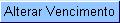

para confirmar a alteração da(s) data(s) de vencimento da(s) conta(s).
para confirmar a alteração da(s) data(s) de vencimento da(s) conta(s).O sistema apresentará um caixa de diálogo, solicitando a confirmação da alteração do vencimento da(s) conta(s).
Alterar Vencimento da Conta
Esta opção do sistema faz parte do processo "Manter Conta" e serve para alterar a data de vencimento da(s) conta(s) selecionada(s).
Apenas funcionários credenciados é que poderão efetuar esta operação.
O acesso a esta funcionalidade deve ser realizado pelo "menu" do sistema: "Gcom --> Faturamento --> Conta --> Manter Conta".
Inicialmente você deverá informar o imóvel, para o qual, deseja manter contas.
Após informar o imóvel, o sistema apresentará as seguintes informações:
Para "Alterar a Data de Vencimento da(s) Conta(s)" você deverá selecionar a(s) conta(s) no "check-box" que fica ao lado da conta, e clicar no botão .
para confirmar a alteração da(s) data(s) de vencimento da(s) conta(s).Preenchimento dos campos
Data de Vencimento(*): Informe a nova data de vencimento da(s) conta(s).
 , existente ao lado do
campo, que será apresentada uma tela onde você
poderá selecionar uma data no calendário. Clique aqui para obter
instruções mais detalhadas da tela
"Calendário".
, existente ao lado do
campo, que será apresentada uma tela onde você
poderá selecionar uma data no calendário. Clique aqui para obter
instruções mais detalhadas da tela
"Calendário".Observação: Os campos obrigatórios estão marcados um um asterisco vermelho (*)
Funcionalidade dos botões:
|
Botão |
Descrição |
|
|---|---|---|
|
Ao acionar este botão, o sistema íra abrir uma tela para que você selecione a data a partir de um calendário. Clique aqui para obter a ajuda da tela do calendário. | |
|
Utilize
este
botão para confirmar a altaração do vencimento da(s) conta(s). O sistema apresentará um caixa de diálogo, solicitando a confirmação da alteração do vencimento da(s) conta(s).
|
|
 |
Utilize este botão para fechar a tela sem efetuar a colocação a alteração do vencimento de nenhuma conta. Após fechar a tela, o sistema voltará para a tela anterior "Manter Conta" . |
Tela de Sucesso:
Após clicar no
botão , e
não houver nenhuma
inconsistência no conteúdo dos campos da tela, o
sistema voltará para a tela "Manter Conta",
atualizando a coluna "Venc.", das contas selecionadas na
tabela de contas, com a nova data de vencimento.